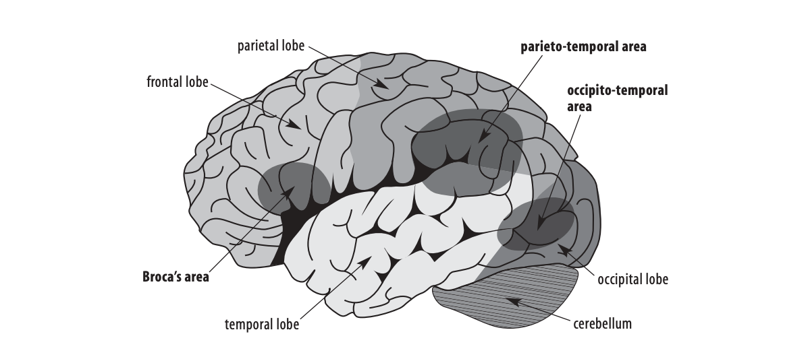

Dyslexia is an often-misunderstood, confusing term for reading problems. The word dyslexia is made up of two different parts: dys meaning not or difficult, and lexia meaning words, reading, or language. So quite literally, dyslexia means difficulty with words (Catts & Kamhi, 2005). Despite the many confusions and misunderstandings, the term dyslexia is commonly used by medical personnel, researchers, and clinicians. One of the most common misunderstandings about this condition is that dyslexia is a problem of letter or word reversals (b/d, was/saw) or of letters, words, or sentences “dancing around” on the page (Rayner, Foorman, Perfetti, Pesetsky, & Seidenberg, 2001). In fact, writing and reading letters and words backwards are common in the early stages of learning to read and write among average and dyslexic children alike, and the presence of reversals may or may not indicate an underlying reading problem. See Table 1 for explanations of this and other common misunderstandings. One of the most complete definitions of dyslexia comes from over 20 years of research: "Dyslexia is a specific learning disability that is neurobiological in origin. It is characterized by difficulties with accurate and/or fluent word recognition and by poor spelling and decoding abilities. These difficulties typically result from a deficit in the phonological component of language that is often unexpected in relation to other cognitive abilities and the provision of effective classroom instruction. (Lyon, Shaywitz, & Shaywitz, 2003, p. 2)" Dyslexia is a specific learning disability in reading that often affects spelling as well. In fact, reading disability is the most widely known and most carefully studied of the learning disabilities, affecting 80% of all those designated as learning disabled. Because of this, we will use the terms dyslexia and reading disabilities (RD) interchangeably in this article to describe the students of interest. It is neurobiological in origin, meaning that the problem is located physically in the brain. Dyslexia is not caused by poverty, developmental delay, speech or hearing impairments, or learning a second language, although those conditions may put a child more at risk for developing a reading disability (Snow, Burns, & Griffin, 1998). Children with dyslexia will often show two obvious difficulties when asked to read text at their grade level. First, they will not be able to read as many of the words in a text by sight as average readers. There will be many words on which they stumble, guess at, or attempt to “sound out.” This is the problem with “fluent word recognition” identified in the previous definition. Second, they will often show decoding difficulties, meaning that their attempts to identify words they do not know will produce many errors. They will not be very accurate in using letter-sound relationships in combination with context to identify unknown words. These problems in word recognition are due to an underlying deficit in the sound component of language that makes it very difficult for readers to connect letters and sounds in order to decode. People with dyslexia often have trouble comprehending what they read because of the great difficulty they experience in accessing the printed words.
The human brain is a complex organ that has many different functions. It controls the body and receives, analyzes, and stores information. The brain can be divided down the middle lengthwise into a right and a left hemisphere. Most of the areas responsible for speech, language processing, and reading are in the left hemisphere, and for this reason we will focus all of our descriptions and figures on the left side of the brain. Within each hemisphere, we find the following four brain lobes (see Figure 1).  Excerpted from Teaching Reading Sourcebook, Third Edition. Honig B., Diamond L. & Gutlohn, L. (© 2018 by CORE) The frontal lobe is the largest and responsible for controlling speech, reasoning, planning, regulating emotions, and consciousness. In the 19th century, Paul Broca was exploring areas of the brain used for language and noticed a particular part of the brain that was impaired in a man whose speech became limited after a stroke. This area received more and more attention, and today we know that Broca’s area, located here in the frontal lobe, is important for the organization, production, and manipulation of language and speech (Joseph, Noble, & Eden, 2001). Areas of the frontal lobe are also important for silent reading proficiency (Shaywitz et al., 2002). The parietal lobe is located farther back in the brain and controls sensory perceptions as well as linking spoken and written language to memory to give it meaning so we can understand what we hear and read. The occipital lobe, found at the back of the head, is where the primary visual cortex is located. Among other types of visual perception, the visual cortex is important in the identification of letters. The temporal lobe is located in the lower part of the brain, parallel with the ears, and is involved in verbal memory. Wernicke’s area, long known to be important in understanding language (Joseph et al., 2001), is located here. This region, identified by Carl Wernicke at about the same time and using the same methods as Broca, is critical in language processing and reading. In addition, converging evidence suggests that two other systems, which process language within and between lobes, are important for reading. The first is the left parietotemporal system that appears to be involved in word analysis – the conscious, effortful decoding of words (Shaywitz et al., 2002). This region is critical in the process of mapping letters and written words onto their sound correspondences – letter sounds and spoken words (Heim & Keil, 2004). This area is also important for comprehending written and spoken language (Joseph et al., 2001). The second system that is important for reading is the left occipitotemporal area. This system seems to be involved in automatic, rapid access to whole words and is a critical area for skilled, fluent reading (Shaywitz et al., 2002, 2004).
Studies of structural differences in the brains of people of all ages show differences between people with and without reading disabilities. The brain is chiefly made up of two types of material: gray matter and white matter. Gray matter is what we see when we look at a brain and is mostly composed of nerve cells. Its primary function is processing information. White matter is found within the deeper parts of the brain, and is composed of connective fibers covered in myelin, the coating designed to facilitate communication between nerves. White matter is primarily responsible for information transfer around the brain. Booth and Burman (2001) found that people with dyslexia have less gray matter in the left parietotemporal area (Area A in Figure 2) than nondyslexic individuals. Having less gray matter in this region of the brain could lead to problems processing the sound structure of language (phonological awareness). Many people with dyslexia also have less white matter in this same area than average readers, which is important because more white matter is correlated with increased reading skill (Deutsch, Dougherty, Bammer, Siok, Gabrieli, & Wandell, 2005). Having less white matter could lessen the ability or efficiency of the regions of the brain to communicate with one another. Other structural analyses of the brains of people with and without RD have found differences in hemispherical asymmetry. Specifically, most brains of right-handed, nondyslexic people are asymmetrical with the left hemisphere being larger than the same area on the right. In contrast, Heim and Keil (2004) found that right-handed people with dyslexia show a pattern of symmetry (right equals left) or asymmetry in the other direction (right larger than left). The exact cause of these size differences is the subject of ongoing research, but they seem to be implicated in the reading and spelling problems of people with dyslexia.
We lack space here for a detailed explanation of imaging techniques. For excellent descriptions of several techniques, readers are directed to Papanicolaou, Pugh, Simos, and Mencl (2004) and Richards (2001). One commonly used method for imaging brain function is functional magnetic resonance imaging (fMRI), a noninvasive, relatively new method that measures physiological signs of neural activation using a strong magnet to pinpoint blood flow. This technique is called “functional” because participants perform tasks while in (or under) the magnet, allowing measurement of the functioning brain rather than the activity of the brain at rest. Several studies using functional imaging techniques that compared the brain activation patterns of readers with and without dyslexia show potentially important patterns of differences. We might expect that readers with RD would show underactivation in areas where they are weaker and overactivation in other areas in order to compensate, and that is exactly what many researchers have found (e.g., Shaywitz et al., 1998). This type of functional imaging research has just begun to be used with children. This is in part because of the challenges involved in imaging children, including the absolute need for the participant’s head to remain motionless during the scanning. We will present the largest, best-specified study as an example of these new findings with children. Shaywitz et al. (2002) studied 144 righthanded children with and without RD on a variety of in- and out-of-magnet tasks. They compared brain activation between the two groups of children on tasks designed to tap several component processes of reading: - identifying the names or sounds of letters - sounding out nonsense words - sounding out and comparing meanings of real words The nonimpaired readers had more activation in all of the areas known to be important for reading than the children with dyslexia. Shaywitz et al. (2002) also found that the children who were good decoders had more activation in the areas important for reading in the left hemisphere and less in the right hemisphere than the children with RD. They suggested that for children with RD, disruption in the rear reading systems in the left hemisphere that are critical for skilled, fluent reading (Area B in Figure 2) leads the children to try and compensate by using other, less efficient systems (Area A in Figure 2 and systems in the right hemisphere). This finding could explain the common experience in school that even as children with dyslexia develop into accurate readers, their reading in grade-level text is often still slow and labored without any fluency (e.g., Torgesen, Rashotte, & Alexander, 2001). In summary, the brain of a person with dyslexia has a different distribution of metabolic activation than the brain of a person without reading problems when accomplishing the same language task. There is a failure of the left hemisphere rear brain systems to function properly during reading. Furthermore, many people with dyslexia often show greater activation in the lower frontal areas of the brain. This leads to the conclusion that neural systems in frontal regions may compensate for the disruption in the posterior area (Shaywitz et al., 2003). This information often leads educators to wonder whether brain imaging can be used as a diagnostic tool to identify children with reading disabilities in school.
In a word, no. Dyslexia is a lifelong condition that affects people into old age. However, that does not mean that instruction cannot remediate some of the difficulties people with dyslexia have with written language. A large body of evidence shows what types of instruction struggling readers need to be successful (e.g., National Institute of Child Health and Human Development, 2000; Snow et al., 1998; Torgesen, 2000). Now researchers can also “look” inside the brains of children before and after an intensive intervention and see for the first time the effects of the intervention on the brain activity of children with RD. The following are two such studies. Aylward et al. (2003) imaged 10 children with dyslexia and 11 average readers before and after a 28-hour intervention that only the students with dyslexia received. They compared the two groups of students on out-of-magnet reading tests as well as the level of activation during tasks of identifying letter sounds. They found that while the control children showed no differences between the two imagings, the students who received the treatment showed a significant increase in activation in the areas important for reading and language during the phonological task. Before the intervention, the children with RD showed significant underactivation in these areas as compared to the control children, and after the treatment their profiles were very similar. These results must be viewed with caution because of several limitations. One limitation is the lack of specificity about the intervention that was provided, another is the small sample size, and the last is the lack of an experimental control group (i.e., a group of children with RD who did not receive the treatment). Without an experimental control group, we cannot be certain that the intervention caused the changes found in the brain activation because of so many other possible explanations. Shaywitz et al. (2004) addressed these limitations in their investigation of brain activation changes before and after an intervention. They studied 78 second and third graders with reading disabilities who were randomly assigned to three groups: - the experimental intervention - school-based remedial programs - control Before the intervention, all groups looked similar in their brain activity, but immediately after the intervention the experimental and control groups had increased activation in the left hemispheric regions important for reading. One year after intervention, the experimental group showed increased activity in the occipito-temporal region important for automatic, fluent reading (Area B in Figure 2), while at both time points the level of compensatory activation in the right hemisphere decreased. Shaywitz et al. (2002) concluded, “These findings indicate that … the use of an evidence-based phonologic reading intervention facilitates the development of those fast-paced neural systems that underlie skilled reading” (p. 931). Citation Hudson, R.F., High, L. Al Otaiba, S. Dyslexia and the brain: What does current research tell us? (2011) The Reading Teacher, 60(6), 506-515.